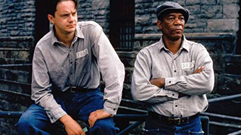
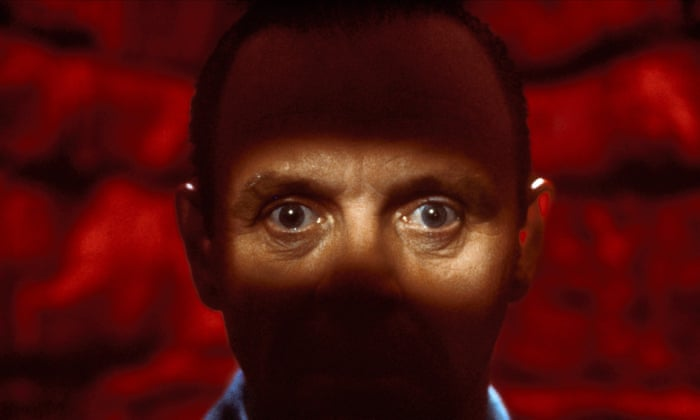
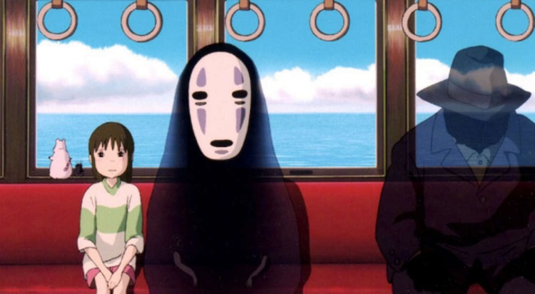
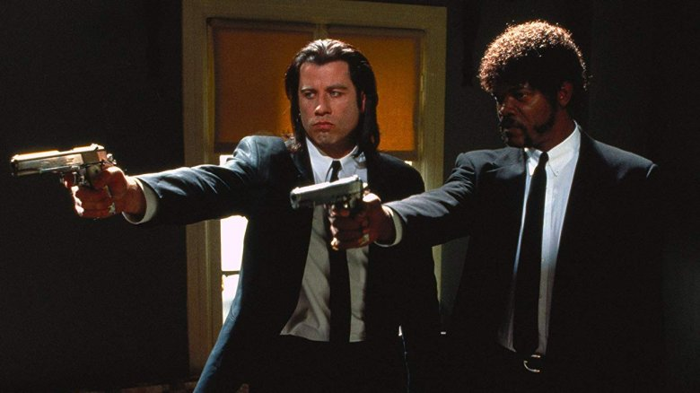
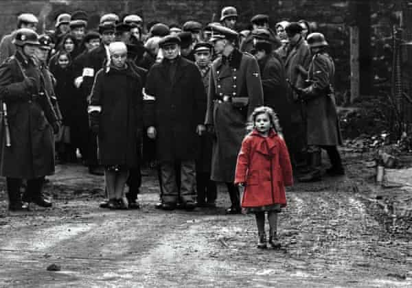
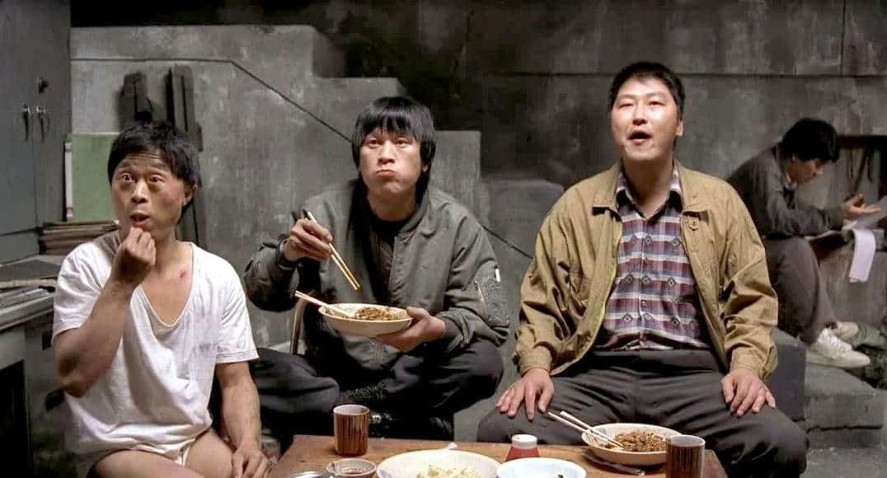

Rekomendasi Film Terbaik Yang Tak Boleh Ketinggalan. Mana Saja Yang Sudah Kalian Tonton?
by Herjuna Ridwan. Tanggal 1 Desember 2020
Bingung harus nonton film apa lagi? Jangan khawatir. Kali ini kami akan membahas film terbaik sepanjang masa versi Pogan.id
Film-film yang masuk ke dalam daftar ini tidak dipilih berdasarkan skor mereka di IMDB atau Rotten Tomato, melainkan kompilasi film terbaik dari berbagai genre. Sudah tidak sabar?
Langsung saja disimak yuk ulasan lengkapnya!
Rekomendasi Film Terbaik versi Pogan.id
1. Shawshank Redemption
Mungkin jarang sekali kamu menemukan orang yang belum pernah menonton film terbaik sepanjang masa ini.
Jika kamu belum menontonnya, kamu melewatkan salah satu karya terbaik di dunia perfilman yang pernah dibuat.
Film adaptasi dari novel karya Stephen King ini merupakan film dengan rating tertinggi di IMDB.
2. Saving Private Ryan
Hampir semua film garapan Stephen Spielberg memberikan kesan yang membekas, tak terkecuali “Saving Private Ryan”.
Film ini sendiri menceritakan 8 tentara yang bertugas menjemput seorang tentara bernama James Francis Ryan.
Salah satu scene yang epic adalah peperangan intens selama 27 menit pada pembukan film yang merupakan insiden Pantai Omaha pada tanggal 6 Juni 1994.
3. Silence of The Lamb
Diadaptasi dari novel berjudul sama, “Silence of The Lamb” menceritakan tentang kisah seorang agen FBI yang bekerja sama dengan pembunuh kanibal untuk menangkap pembunuh berantai.
Karena kesuksesannya, film ini berhasil melibas 5 Piala Oscar dari 7 nominasi yang meliputi,
- Best Picture
- Best Director
- Best Actor
- Best Actress
- Best Adapted Screenplay
4. Spirited Away
Siapa bilang film animasi hanya diperkenankan untuk anak kecil?
Film yang berhasil mendapatkan Academy Awards pada kategori “Best Animated Feature” pada tahun 2003 ini tampaknya adalah salah satu pengecualian.
Animasi karya Hayao Miyazaki ini menceritakan petualangan seorang anak gadis di menyelamatkan orang tuanya yang berubah menjadi babi di sebuah dunia yang asing.
5. Pulp Fiction
Ingin mencoba menonton film dengan durasi 3 jam tanpa merasakan bosan sedikit pun?
Kalau begitu, kamu harus mencoba film garapan sutradara ternama, Quentin Tarantino.
Bercerita tentang kehidupan 2 pembunuh bayaran, istri seorang kriminal, dan beberapa karakter menarik lainnya…
6. Schindler’s List
Terinspirasi dari kisah nyata pada Perang Dunia II, film yang menceritakan seorang pebisnis amatir Nazi ini membuka usaha untuk 1.200 orang Yahudi.
Kisah mengharukan tentang penyelamatan kaum Yahudi dari holocaust berhasil membuat film ini diganjar 12 Academy Awards.
7. Forrest Gump
“Forrest Gump” adalah film yang akan mengajarkanmu untuk tidak berhenti mengejar mimpi walaupun kamu memiliki keterbatasan.
Dibintangi oleh Tom Hanks, film ini sudah pasti akan menyuguhkanmu dengan acting kelas wahid dengan cerita yang menghangatkan hati.
10. Inception

Inception adalah salah satu film terbaik yang datang dari sutradara yang sudah tak asing lagi kancahnya di dunia hiburan, Christoper Nolan.
Dikenal sering membuat film yang membuat penontonnya berpikir keras, Nolan mengadirkan sebuah plot yang tak biasa pada film ini, yakni mencuri ide dalam mimpi.
Dijamin, film yang dibintangi Leonardo DiCaprio ini bakal bikin otak kamu bekerja lebih keras ketika ditonton!
11. Memories of Murder
Terinspirasi dari kisah nyata pembunuh berantai di Kota Hwaseong, film ini banyak disebut orang sebagai salah satu film terbaik di Korea Selatan.
Sutradara dari film ini sendiri adalah Bong Joon Ho yang dikenal luas di dunia internasional semenjak film terakhirnya, “Parasite”, rilis di tahun 2019.
Itulah beberapa film terbaik yang wajib banget kalian toton dalam waktu dekat ini, Tak banyak yang bisa saya jelaskan secara detail mengenai filosofi film-film tersebut.
Semoga tulisan ini dapat membantumu menemukan film untuk menemanimu di akhir pekan, ya!